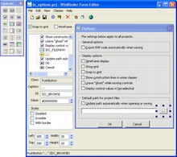

Хотя PHP и не слишком распространён в данной области, его можно использовать и для создания GUI-приложений.Для создания кроссплатформенных приложений служат пакеты PHP-GTK и PHP-Qt, представляющие собой обёртки для соответствующих популярных библиотек виджетов. Также существет среда разработки кроссплатформенных приложений Devel Next. Для создания графических приложений для Windows существуют свободные пакеты WinBinder (написан на Си, фактически — обёртка для WinAPI), PQBuilder (написан на PHP с использованием библиотеки PHPQt5), а также предшественник Devel Next — среда быстрой разработки Devel Studio. Кроме этого существует реализация PHP для .NET/Mono — Phalanger и для JVM — JPHP, результатом компиляции PHP-кода в Phalanger может быть любое .NET-приложение, в то же время JPHP поддерживает расширение Swing, почти полностью портированное из среды Java.
